Cuando los ejecutivos viajan y necesitan una prostituta de lujo la buscan en los anuncios de algún escort service.
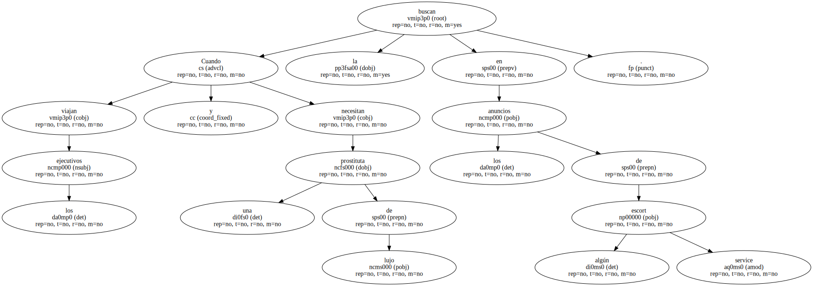En Maridos y mujeres , cuando el jefe de Sidney Pollack insiste en presentarle una muchacha que hará maravillas y Pollack le dice que no quiere una puta el jefe le replica que no es una puta , sino una escort girl.
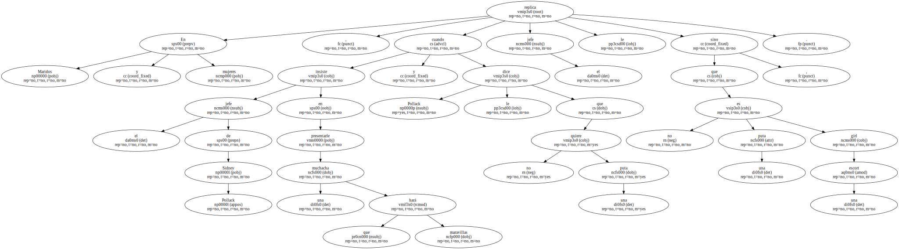Por qué se llama Cortina el modelo Cortina es también claro.

Aparte de que sea la tela colgante con que se cubre una puerta o ventana , Cortina se refiere sobre todo a Cortina d'Ampezzo ( Los anglófonos tienden a cortar las segundas partes de los topónimos compuestos : Rio por Rio de Janeiro , Cortina por Cortina d'Ampezzo ... ).
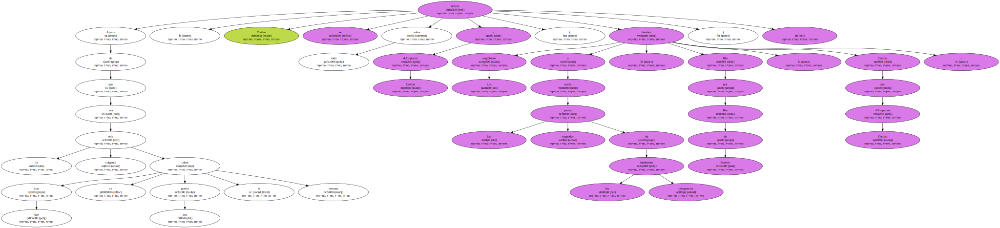Según el cine europeo de los 60 , Cortina d'Ampezzo era el no va más del après-ski y el vacile , el lugar idóneo para que Capucine luciese la nariz.
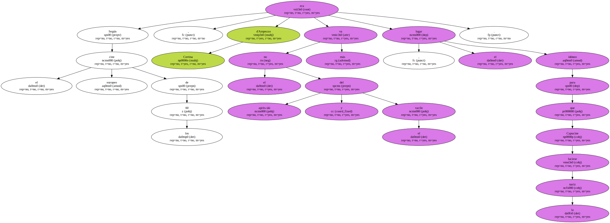Con el modelo Granada - tierra soñada por mí - lo mismo , gracias a Mario Lanza.
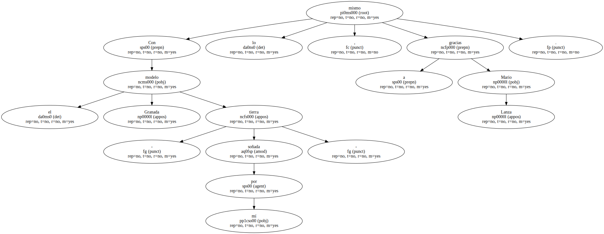El modelo Sierra toma su nombre de esa palabra española , aprovechando que no es en absoluto extraña al mundo anglosajón : ya aparece en inglés americano en 1759.
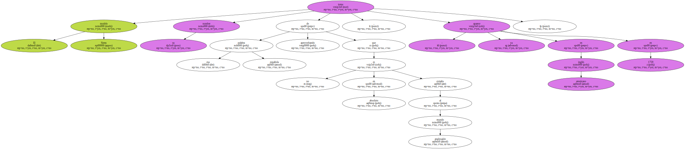Scorpio es la forma inglesa de Escorpio , el signo zodiacal de los nacidos entre el 23 de octubre y el 21 de noviembre.
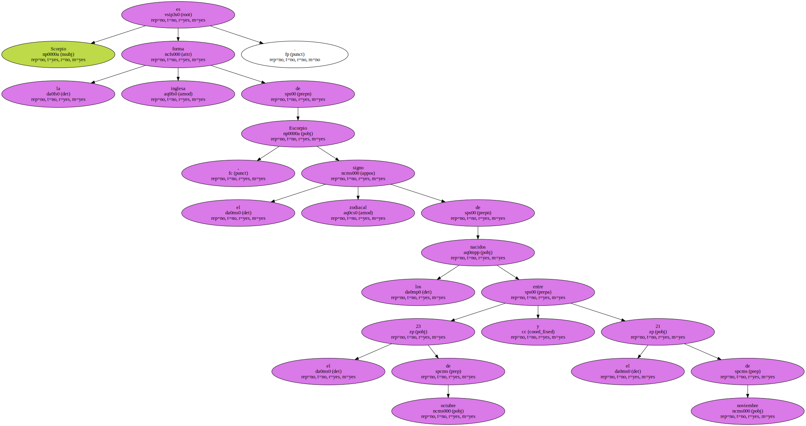Y Orion es Orión , el gigante mítico , y también la constelación.

- Y Mondeo.
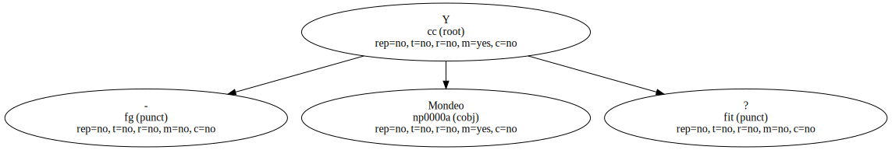- Qué significa Mondeo.
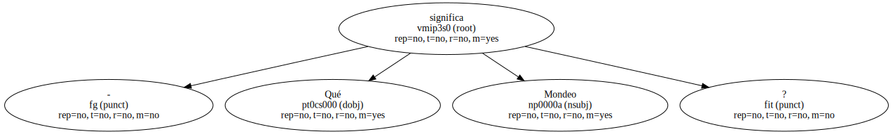Las Tortugas Ninja dicen - ¡ Mondo ! - en las ocasiones en que otros personajes de dibujos animados - más censurados - dirían por ejemplo - ¡ Cáspita !.
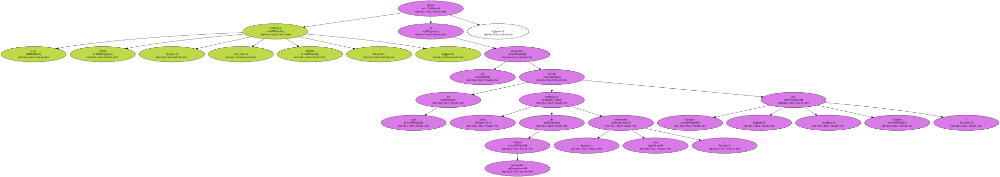Pero incluso mondo quiere decir algo : en italiano es mundo , como recordaba Jimmy Fontana con vehemencia , hace décadas.
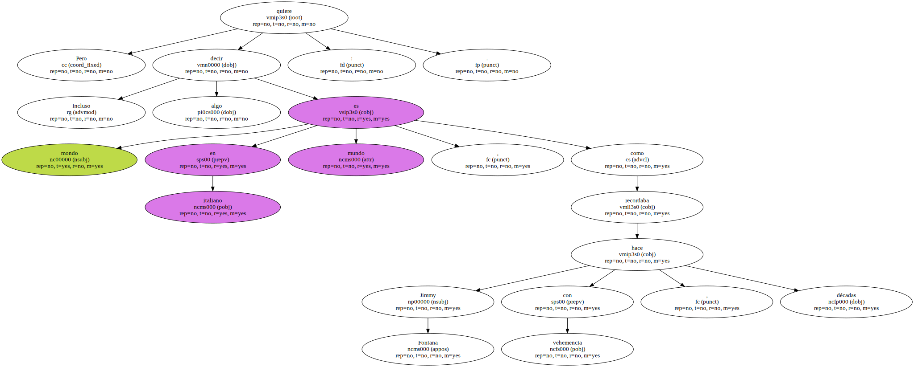Mondeo no quiere decir nada.
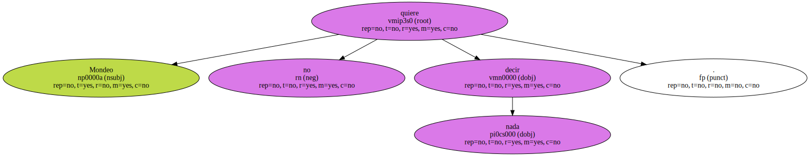Se parece a la palabra francesa monde , a la esperantista mond , a las españolas mundo , mundano , mono y mondo , pero no es ninguna de ellas.
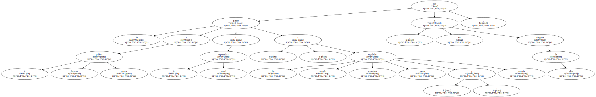Mondejo es el relleno de la panza del cerdo o del carnero.
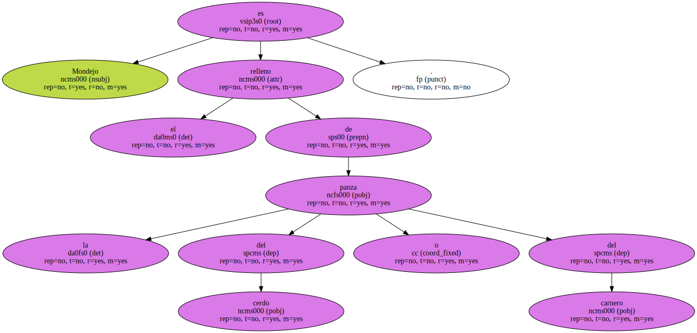